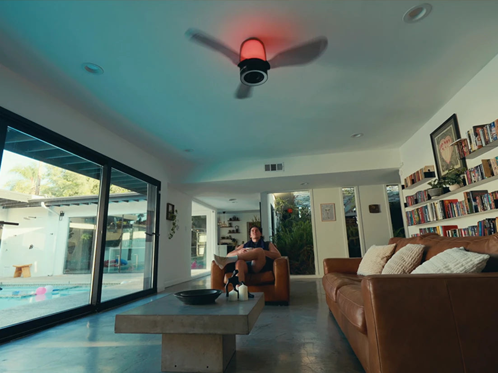

TL;DR
- Choose by ceiling fit first, then by music, lighting and controls. The mounting point has to work for all three functions.
- AirFi One combines a three-driver audio system developed with Jamo, dimmable white lighting and a separate RGB ring.
- Its fan, lights and speaker work independently. Music can play while the lights are off, with the fan at the speed you choose.
- Compare the full installed price. Fan support, wiring and access can change the cost of replacing an existing light.
A ceiling fan with a Bluetooth speaker and light combines cooling, lighting and music in one overhead fixture. AirFi One combines those functions in a 48-inch flush-mount fixture, with an audio system developed with Jamo.
Start with the room and the budget
| Room or priority | Starting choice | What to check |
|---|---|---|
| Fixture budget below $200 | Use the lower-priced models in the comparison table as a starting point. | Choose among their 42- and 52-inch spans and downrod or flush mounts using the model table below. |
| Limited ceiling height | Check a flush-mount design against the room’s height. | Calculate blade height from the mounting drawing; allow for the light or speaker below the blades. |
| Bedroom music and overnight airflow | Shortlist a model with suitable low-speed airflow, dimming and bedside controls. | Confirm the operating sound at the usual speed and whether music can play with the light off. |
| A room update that includes shared music | AirFi One combines a Jamo-developed speaker system with the fan and lighting. | The ceiling point should sit over the shared space; allow $499 for the fixture plus installation. |
| Focused stereo listening or TV sound | Choose the audio layout around the sofa or screen. | A separate speaker pair or TV audio system allows sound to be placed in front of the seat. |
| Covered patio | Choose a fixture with the required outdoor-location rating. | Check the model’s damp- or wet-location rating. |
Music, light and airflow on your schedule
AirFi One plays music from your phone over Bluetooth. The remote handles fan and lighting settings, and Wi-Fi connects the fixture to the WindGroove app for setup and controls.
The fan, main light, RGB ring and speaker work independently. During dinner, music can play with the main light dimmed. Later, the fan can keep running with the lights off.

What AirFi One brings to the room
For music, look at the speaker design and listening layout
AirFi One’s audio system was developed with Jamo. A 5.25-inch woofer handles bass, while two 1.5-inch drivers cover the middle and upper frequencies. DSP tuning and EQ settings shape their balance.
The built-in speaker keeps tabletops and shelves clear. Its overhead position suits music around a dining table or living area. For a stereo pair facing a sofa, use the system-planning guide to compare speaker layouts.
For lighting, start with the main white light
Compare brightness, dimming and white-light settings before the color effects. AirFi One’s main light is rated at 1,200 lumens and offers 3000K, 4000K and 6500K settings. Its RGB ring supplies a separate color effect.
AirFi One’s 10–100% dimming range lets you lower the main light for dinner or evening listening.
Four fan, light and speaker fixtures compared
All four fixtures combine a fan, light and Bluetooth speaker. The Orren Ellis entry uses the black, flush-mount option.
| Model and listed price | Size and mounting | Light and speaker | Controls |
|---|---|---|---|
| WindGroove AirFi One $499 | 48-inch span; flush mount; 13-inch overall height. | 1,200-lumen dimmable main light and RGB ring; woofer and two mid-high drivers, with audio developed with Jamo. | Remote and optional Wi-Fi app controls; fan, lights and speaker operate independently. |
| Sofucor KYLY42202 $159.99 | 42-inch retractable blades; downrod mount. Listing includes 5- and 10-inch downrods. | Integrated white and RGB LED lighting; Bluetooth speaker. | Remote and i-Link app. |
| Villabrot VB03CFL605NW $190.56 | 52-inch span; downrod mount. | Dimmable white LED light with three color settings; Bluetooth speaker. | Remote control. |
| Orren Ellis W118472197 $142.99 | Selected 52-inch black model; flush mount. | White LED lighting and ambient color lighting; Bluetooth speaker. | Remote and Smart Light Pro app. |
Will the shortlisted models fit?
Compare the fully extended blade span and installed height before choosing between the four models. A smaller fan can still hang lower if it uses a downrod. In a narrow room, nearby cabinets or beams may decide which models remain on the list.
For AirFi One, the required clearances are at least 7 feet from blades to floor and 30 inches from blade tips to walls or obstacles. The mounting guide shows how to calculate both. Its 13-inch overall height includes the light and speaker below the blades.
For airflow, compare the published cubic feet per minute (CFM) and the speed used to measure it. A bedroom needs useful low-speed airflow as well as sufficient maximum output. The airflow worksheet helps put those figures beside your room measurements.
How the choice changes by room
A bedroom: start with low-speed comfort and evening light
Assess the fan at the speed likely to run overnight, then try the light’s dimming range and bedside controls.
A small room: map the blade sweep before shopping by style
Mark the mounting point and measure toward the nearest walls and tall furniture. Then compare the fully extended diameter and the blade-to-floor height. A smaller blade span may fit the available width, while the mount determines how much ceiling height the fixture needs.
A limited budget: allow for installation
The three lower-priced models in the table all fall below $200 for the fixture. Add installation to the budget. Replacing a light may require new fan-rated support; an existing fan point may already have suitable support. An installer can confirm the work for the chosen model.
For a closer look at what the additional budget covers, see the budget and upgrade comparison.
Buying questions
Can I replace an ordinary ceiling light with a fan-light-speaker fixture?
Often, but the ceiling support and electrical arrangement need checking first. For AirFi One, we recommend a licensed electrician and a fan-rated ceiling box. Give the installer the exact model’s instructions before requesting a quote.
Should I choose the fan before getting an installation quote?
Shortlist the exact model first, then give its installation instructions to the installer. The mount, ceiling support and wall controls affect the work required. Use that quote alongside the fixture price before ordering.
Can I use one of these on a covered patio?
Choose a model with an explicit rating for that location. A roof over the patio still leaves the fixture exposed to outdoor conditions. Check the exact model’s damp- or wet-location rating and installation instructions.
What should I ask about long-term maintenance?
Ask how the light, remote, control module and speaker are serviced, and which replacement parts are available for the exact model. Ask whether the service quote includes removal and reinstallation.